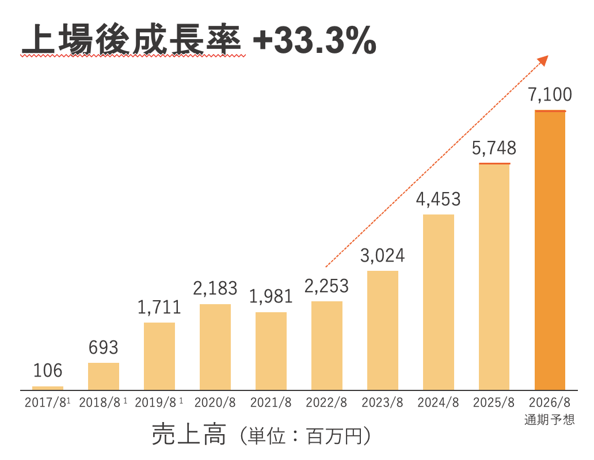

株式会社プログリット / 代表取締役社長 岡田祥吾

Speaker
趣味: キックボクシング、釣り、ゴルフ
今日は会社説明はほとんどしません。
「就活の勝ち方」の話をします。
これ、何の時間だと思いますか？
皆さんが生涯で仕事に使う時間です。
10時間 × 5日 × 4週 × 12か月 × 43年
小学校から大学までの授業時間の約7倍
それでは、この時間を
どう過ごすか？
人生にしなければならない。
就職活動とは、
知名度の高い会社の内定を勝ち取るゲームではなく、
10万時間をどう使うかを決める
重要な意思決定です。
10万時間の使い方
← 合計 100,000時間 →
Phase 2でどれだけのことを残せるかは、
Phase 1でどれだけ
価値を高められたかで決まります。
10万時間をすごす意思決定。
では、何を基準に
選べばいいのか？
「自分の市場価値を上げる」
市場価値とは、あなたのスキル・経験・知識に対して
企業が「払ってもいい」と思える対価の大きさのことです。
なぜ、市場価値を高める
必要があるのか？
① 転職はもう「当たり前」になっている
3年連続増加
出典: 総務省「労働力調査」
日本の転職者数は、1990年代の約250万人から毎年300万人以上が転職する時代になりました。
「一つの会社で定年まで」という前提は、
もう成り立っていません。
② 終身雇用は、もう守れない
「なかなか終身雇用を守っていくのは
難しい局面に入ってきた」
— 豊田章男（トヨタ自動車 社長 / 2019年5月 日本自動車工業会 会長会見にて）
日本最大の企業のトップが公言しています。
会社がキャリアを守ってくれる時代は終わりました。
自分の力で、自分のキャリアを切り拓く必要があります。
③ AIが、変化をさらに加速させている
1億ユーザー到達までの期間
出典: UBS（2023年）
WEF 予測（2030年まで）
22%
の仕事が役割変化する
変化のスピードはこれからさらに加速します。
「今の延長線上」で考えるキャリアは、
数年後に通用しなくなるかもしれません。
自分自身の
市場価値を高めること。
それが、最大のリスクヘッジです。
市場価値を
どう高めるか？
市場価値の構造
市場価値
汎用性
どの業界・会社でも
通用する強み
希少性
他の人にはない
希少な力や経験
最初の10年で、差は一気に開きます。
だからこそ、最初の就職活動を「市場価値を高める就職活動」にしましょう。
市場価値を高めにくい選択
市場価値
汎用性
希少性
自分の会社・部署の中だけで
通用するスキルは、
市場価値を高めにくいです。
誰もが当たり前に選ぶ道は、
市場価値を高めにくいです。
では、どのような選択をすると
市場価値が高まるのか？
市場価値を高める2つの基準
自力で成長している会社を
選ぶこと
市場の追い風ではなく、会社そのものの力で成長している企業には、他社にはない卓越した知見が蓄積されています。
上流から下流まで
全部やれる会社を選ぶこと
企画から実行、結果検証まで自分で担うことで、学習のスピードが格段に上がります。
基準① 自力で成長している会社
業界全体が伸びているから成長している
波が止まったとき、会社にも自分にも何も残りません。
競合が横ばいの中で、独自の力で伸びている
他社にはない知見が蓄積され、そこで得られる力はどこでも通用します。
基準② 上流から下流まで、全部やれる会社
上流のみ
失敗しても「実行が悪かった」と言えてしまい、責任を負いにくく学びが浅くなります。
下流のみ
失敗しても「戦略が悪かった」と言い訳でき、成長につながりにくいです。
上流〜下流
全ての結果が自分に返ってきます。成長のスピードが圧倒的に速くなります。
プログリットの10年
英語だけの会社じゃない。
MISSION
世界で自由に活躍できる人を増やす
人の可能性を開花させるテクノロジーカンパニー
人も組織も、可能性の塊です。
しかし、その可能性を開花させることなく人生を終えてしまう人も少なくありません。
今、就職活動をしている皆さんも、可能性の塊です。
私たちは、人の可能性を最大化させるためのサポートを通じて社会に貢献しています。
人間の力と最先端のテクノロジーを最大限に掛け合わせることで、一人ひとりの可能性を開花させています。
会社の特徴
成長スピード

抜擢文化

新卒入社3年目で
新規事業責任者
スピフル事業部

シャドテン事業部
マーケティング責任者
新卒入社1年目で就任
2DAYS INTERNSHIP
他のインターンとの違い
企画して、
発表して、
終わり。
企画して、
AIで実装して、
動かす。
参加する3つのメリット
私が皆さんの発表に忖度なしで直接フィードバックします
AI時代のキャリア戦略が見えます
各班にメンターが伴走し、個人FBもします。今後のインターンで有利になります
こんな人に来てほしい
コンサル・大企業志望で、今後の就活インターンで有利になりたい人
まだ就活の軸が固まり切っていない人
AI時代の働き方を体感したい人
エントリーのご案内
東京
(東京)
大阪
(大阪)
※ 定員に達し次第、締め切ります / ※ 交通費支給